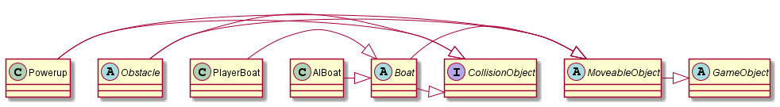
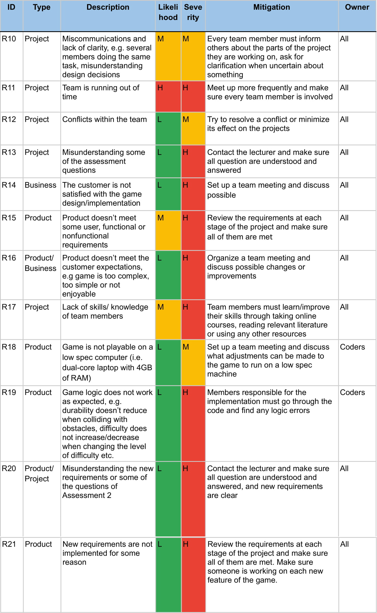

Requirements
Architecture
Method
Risk Assessment
Implementation
Executables
Releases and Full Project ZIP
Java Doc
Change Report
Implementation
Testing
Continuous Integration
Requirements - updated
Architecture - updated
Method Selection and Planning - updated
Risk Assessment and Mitigation - updated
User Manual
Executables
Releases and Full Project ZIP
Java Doc
Implementation
Difficulty
UR_LEVELS refers to the new requirement that the game must allow players to choose between different levels of difficulty: Easy, Normal and Hard.
There are 3 different difficulty levels implemented into the game. They are Easy, Medium (Normal) and Hard. The difficulty you wish to play on can be selected in the settings screen on the main menu and then that difficulty is implemented when you start a game.
When changing between difficulty settings four values are changed to different values depending on the selected difficulty level. BOAT_TARGET_SPEED which represents the AI boat's maximum speed and is set to the lowest value of 0.80 when easy difficulty is selected, is increased for medium to 0.88 and is highest when hard difficulty is selected at 0.99. OBSTACLE_COUNT which represents the number of obstacles that are spawned randomly throughout the map, this is set to the lowest value of 50 when on easy and is increased on medium to 100 and set to the max value of 200 when on hard. LEG_OBSTACLE_MODIFIER which adds a modifier to the number of obstacles spawned per leg depending on difficulty, on easy up to 2x by the final leg, medium up to 3x by the final leg and on hard up to 4x by the final leg. The final variable changed when altering difficulty is POWER_UP_COUNT, this represents the number of powerups spawned in a game and is set to its highest value when on easy at 50 and is decreased to 25 for medium and hard difficulty.
Values for this are stored in Difficulty.java but used where necessary, including in AIBoat.java, and BoatRace.java. This implements the Difficulty class from the game architecture.
Game Save
UR_SAVE denotes the requirement to provide facilities that would allow players to save the state of the game at any point and resume the saved game later.
The game can be saved and specific values are stored into a save file to record the required data about the race which can be loaded at a later time for the player to resume their game. The values saved are the current leg number that the player is on, the number of boats in the race currently, the spec of the boat that the player is using, the times for the previous legs of the player and the times of the previous legs for each ai boat.
In order to save the game data representing the current leg (stored as an integer), boat count (stored as an integer), players boat spec (stored as an integer), players leg times (stored as a list of integers) and AI leg times (stored as a list of a list of integers for each boat) are all collected and serialised so that they can be saved to a binary file. This file can be loaded and the data will be de-serialised so that the player can resume their race by loading in the saved values of each aspect of the race into the current game.
This is implemented in the SaveManager.java file and implements the SaveManager class from the game architecture. Data is saved to the state.sav file.
Power-ups
UR_POWER_UP is a new requirement to implement five power-up packs, which could be found floating down the river and be picked up by boats to improve some of their characteristics.
There are 5 unique power-ups implemented into the game, they are Repair (refills a portion of the players lost durability), Stamina (refills a portion of the players lost stamina), Boost (Gives the player a temporary speed boost), Time (reduces the time taken on the current leg) and Teleport ( jumps the player forward a set distance). When a boat collides with one of the powerups they collect it and its related effect is immediately applied to the player's boat. Each powerup has a unique look so that players can tell which powerup they are collecting.
Power-ups are implemented as an extension of the MovableObject class and their collision is implemented using the CollisionObject class. In this way power-ups act as an obstacle as they are spawned randomly throughout the map and float around with random direction until they are collided with by a player. The main difference is that when collided with instead of reducing the player's speed and durability instead they help the player.
This was implemented in the Powerup.java file. This implements the Powerup class from the game architecture.
Other Changes
There are some other changes to the game that help to improve the experience overall. These are listed below.
- Added a short delay after stopping accelerating as without the delay a player could rapidly press the accelerate button on and off and travel at close to full speed while barely losing any stamina. This was done in order to prevent a player exploiting this in order to win easily (UR_TIRED_OVER_TIME).
- Created a new, more robust UI system which the old menus were refactored to use, to make them easier to navigate and more responsive to user input. This was done to improve the user experience overall whilst using the menus (UR_ACCESSIBILITY). This was implemented throughout the UI Package from the game architecture.
- The AI was completely replaced with a more optimised version, and collisions are now looked up against a Quadtree rather than a List, which resulted in the game using approximately 100x less CPU time and improving performance overall (UR_PERFORMANCE). The AI was also tweaked to make smarter and more aggressive decisions such that it would play better in general (UR_EXCITEMENT). This was implemented in the AIBoat Class from the game architecture.
- Minor changes including reformatting the code inline with the Google Java Style Guide, reducing the number of public and protected fields, updating the project to Java 8, unwrapping complicated if statements, and removing unused code.
Unimplemented Features
No features are unimplemented, and all user requirements defined by the client have been fulfilled to an acceptable level.
Change Report
Change Management
First of all, we went through documentation provided by Team 12 in order to get familiar with their approaches and methods, as well as to identify both unimplemented and new features that must be added to the game. Then, we divided tasks between all members of the team to let everyone contribute to the project. Each member of the team was primarily responsible for one deliverable which they made changes to.
Every week we had a team meeting where we discussed what had been changed or added and what was yet to be done, as well as assigned new tasks. In our own Discord server, members of the team could ask questions or discuss new changes anytime. It allowed members to have a clear understanding of all changes and decisions, and to have an opportunity to express their opinion about a certain change.
To keep track of all changes and make sure that all of them are necessary and justified, we created a change log in our GitHub repository to record all significant changes along with the date when they were made and their details. It enabled the team to react to new changes quickly, for example, to identify the cause of an error in the code or approve/disapprove a change. Additionally, GitHub allows you to view the commit history of any branch, as well as get detailed information about each commit, which is particularly helpful for keeping track of all changes and actions of contributors.
Furthermore, we continued to use Google Drive and some of the office tools that come with it, namely Google Docs and Google Sheets. One of the main advantages of Google tools is the ability to view edit history of a document and restore older versions of it, which is especially useful for change management.
Changes made to Assessment1 deliverables
Requirements:
Requirements:
Once the new requirements for Assessment 2 were released, we analyzed them and defined any associated risks and possible alternatives. We added three new user requirements to Requirements document, namely UR_LEVELS, UR_SAVE and UR_POWER_UP. All of them were set by the customer and listed on VLE. Additionally, we defined new Functional requirements and added them to the spreadsheet created by Team 12.
UR_LEVELS refers to the new requirement that the game must allow players to choose between different levels of difficulty: Easy, Normal and Hard.
UR_SAVE denotes the requirement to provide facilities that would allow players to save the state of the game at any point and resume the saved game later.
Lastly, UR_POWER_UP is a new requirement to implement five power-up packs, which could be found floating down the river and be picked up by boats to improve some of their characteristics.
All of the new requirements were set and defined by the customer, meaning that they are necessary for the game to be complete and successful.
Architecture:
Abstract architectureWe decided to add a new entity to the abstract architecture, namely class Powerup which represents the power-ups that float down the river and can be picked up by boats. Powerup inherits from the abstract class MoveableObject, since it is supposed to be moving along the lane and is similar to the Obstacle class. Like Obstacle, it also implements the CollisionObject interface, although certain functions within the Interface were changed such that any object colliding with some other object, other, will know the type of other and can react accordingly (ie. Power-ups won’t damage the boat, obstacles will). Classes SaveManager and Difficulty were also added.
 Concrete architectureThe concrete architecture itself has not changed much as an outline of classes, although actual implementation details differ significantly. Much of the superfluous and unnecessary code has been removed or re-implemented in a cleaner or more efficient way.
Major changes to the code include:
- The addition of the Powerup class which behaves similarly to the Obstacle class but grants bonuses to the boats rather than penalising them. Required for UR_POWER_UP.
- All CollisionObject instances now have a “value” that the AI uses to decide whether it should steer away from it or towards it, which allows the AI to play more competitively.
- The original artificial intelligence has been stripped out and replaced with one which is much more competitive with the player, and far better optimised. As beating these constitutes 90% of the gameplay, this helps with UR_LEVELS, UR_EXCITEMENT, and UR_PERFORMANCE.
- The Difficulty class has been added, which is implemented as a Singleton and tracks the global difficulty setting. This is accessed by many classes and allows changes to difficulty to be made quickly and centrally. Required for UR_LEVELS
- A rudimentary UI system has been implemented, including Buttons, Switches, Scenes, Labels, and Images. This represents a significant improvement over the original approach which was to manually define these in game states themselves.
- Many classes have had variables and functions removed where they have been unnecessary, primarily in Scene* classes and in BoatRace where a lot of sprites were stored, and references to single objects allow for the removal of checks against entire lists to find one instance of a class.
- The project itself has been updated to Java 8 to take advantage of new (2014) language features for quicker and cleaner development.
- The project has been refactored from snake_case to camelCase for fields and variables as this is Java convention and less confusing.
- Large if-statements connected by
- Almost every class field has been moved from the protected to private access level to prevent accidental change of values by external functions that should not be able to access these.
- The entire game now calculates the time between frames and uses this for movement-related calculations rather than assuming the game runs at 60 frames per second, ensuring consistent movement even if the game is performing poorly. Whilst it doesn’t directly improve performance, it should make the game feel smoother if it does perform poorly, somewhat helping mitigate if UR_PERFORMANCE is not met.
- All non-inner classes have been made public so that they can be used in unit testing, and because exposing classes is generally a lot safer than exposing fields.
Methods and Plans:
Method and Tool SelectionBoth our team and Team 12 have opted to follow an agile development methodology, specifically Scrum. The Scrum framework is designed for smaller teams, making it perfect for us and our project. In Scrum, goals are broken down into small tasks which are completed within a set amount of time known as a sprint. We decided to have small week-long sprints as we had official supervised practical sessions once every week.
Most of the tools used by Team 12 coincided with our choice. Just like Team 12 we used the following tools for completing the tasks in our project:
- Google Drive for storing documents and other files
- Discord for communication
- GitHub for source control
- Google Docs for writing up documents
Additionally, we used PlantUML for creating class diagrams and Javadoc for generating HTML documentation of the source code.
For task management we decided to use GitHub Projects. It is a kanban board-style to-do list allowing for the creation of boards and cards with tasks, which all developers can access and modify. This was ideal for our chosen development methodology as it allows for tasks to be broken down into smaller parts and put on a board where anyone can pick and develop them, then move to the “completed” board. We favoured GitHub Pages over Trello, which was used by Team 12, as we didn’t need any additional features provided by Trello (e.g. colour coding and labelling) and having everything in one place was more convenient for us.
In addition, we supplemented the Method Selection and Planning document with additional information such as information about the selected tools, justification, and possible alternatives to some tools.
We decided not to change the plan and team management approach written by Team 12. Instead, we added our own approach and plan as an extension.
Our approaches are quite similar due to the fact that both our teams used Scrum development framework along with Discord as the main way of communication. Unlike Team 12, who split their team into sub-teams for tackling different parts of the assignment, we divided tasks between individual members of the team. In the approach of Team 12, each task had a leader as well as one or many collaborators which ensured good implementation and involved frequent communication. In our approach, each member of the team was primarily responsible for one task such as writing and updating one of the deliverables or implementing a specific feature of the game. One of the advantages of our method is that everyone had to focus on one or few specific tasks, which allowed for more thorough and deep research and better understanding of each task.
For Assessment 2 we created a new Gantt chart to keep all things separate and focus on the new tasks. We decided to keep Gantt Chart created by Team 12 and supplemented the document with our own Gantt Chart as well as screenshots evidencing our work on the assignment.
We deleted some of the content provided by Team 12, namely sections ‘Key Event List’ and ‘Announcements’, as it overran the page limit allowed for Method Selections and Planning deliverable and went beyond what was required.
Risk Assessment and Mitigation:
Our Approach and PresentationCoincidentally, Team 12 had a similar approach of assessing and presenting risks. We both used Low/Moderate/High scale to assess the likelihood and severity of possible risks, as well as tabular format to present them. This system is clear and easy to understand, which makes it perfect for small projects like ours.
Team 12 and our team both divided risks into three categories: “Project”, “Product” and “Business”. “Project” category was assigned to the risks that might affect our project schedule and progressing speed. “Product” category is for the risks that may potentially affect the quality of the game, for example, any hardware or software issues. “Business” category was assigned to the risks that may affect the success of our product in the market, in our case - success of using the game for promotional activities organized by The University of York Communications Office.
In order to identify the risks associated with the new requirements for Assessment 2, we first reviewed Assessment 1 requirements, specifically those that had not been implemented. Then, we went through our project plan to determine all possible factors that can affect the quality of the final product.
Furthermore, we chose a different format of presenting IDs of the risks, since the old format, used by Team 12, took up too much space and yet was not informative, making it inconvenient for us. We also removed the ‘Backup Owner’ column, since having one risk owner was enough for our team.
Risks and MitigationWe decided to keep all the risks identified by Team 12 as they all were possible and coincided with the risks that had been found by our team. Additionally, we supplemented the table with other risks that we identified while working on Assessment 1&2 as well as after reviewing the new requirements for Assessment 2 (R10-R21):
Contnuous Integration Report
Continuous Integration Methods and Approaches
Our approach to Continuous Integration is to use two separate workflows for testing and building, both running whenever code enters the development or master branch of the project by merge or pull request.
This is well-suited to our project with regards to both our development methodology and the size of the project itself. As we are using the Scrum framework, changes to the codebase are small in size and rapidly produced, and should always be ready for a release build. Our CI methodology allows for this as any code that enters the main parts of the branch must pass a test that confirms it builds, and will report on whether or not it passes unit tests. Furthermore, the codebase is small in scope meaning that only two workflows are required to ensure relatively complete code coverage. If the project was larger, it is possible that there would be multiple CI workflows for individual Java modules or components of the project, but the simplicity of the project means that this would be unnecessary.
By separating out the continuous integration into two discrete stages, we can assure that code entering the main branches of the project will always be buildable. If a commit causes the project to not compile, it should not be allowed into the main branches as we try to maintain a build that works. The second stage checks whether all unit tests are passing. This test will not stop code from entering a main branch as it’s technically still a passable build, but a label on the repository should serve as a warning to any users trying to pull a specific build if it contains bugs.
Continuous Integration Infrastructure
Our approach to Continuous Integration utilises GitHub Actions with two Gradle workflows. Our project already uses Gradle as a build system, so it was the easiest to configure out of all available options.
We use two separate GitHub actions as part of our approach to Continuous Integration which help to ensure code quality. Both run the code on a Linux virtual machine owned by GitHub, providing a development environment similar to what members of the team have so compatibility should not be an issue.
The first action compiles the code with Gradle, for any commits entering the development branch or pull requests into the master branch. This uses the exact same process that developers on the project should already be using to build and compile their copies of code, so there should be no cases of it working on one machine but not another. It ensures that code entering the two branches will always build for whoever is trying to clone it.
The second action compiles and runs a number of JUnit 5 unit tests using Gradle, for any commits or pull requests into the master branch. Like the compilation workflow, this should use the exact same approach that anyone else working on the project should be using to test the codebase. Unlike the compilation workflow, this should not stop code from entering the branch, but will update a badge on the repository’s README.md file which states whether or not the unit tests (and compilation workflow) are passing.
Using these two actions, we can ensure that all code in the master branch will compile to a stable and functional build. Whilst not all builds will be significant enough to be classified as releases, all commits in the master branch should always represent an improvement.
Software Testing Report
Testing Methods and Approaches
Our chosen testing methodology is a combination of dynamic testing and analysis using JUnit5 as a testing framework, and some static testing. As we have full access to the source code, this is the most appropriate testing methodology as it provides as much coverage as required, including or niche internal cases and cases only encountered during gameplay.
Using JUnit 5, we have created a number of unit tests for a majority of the game’s classes and functions. These allow for simple testing, such as checking that a value can’t exceed its maximum or minimum, as well as more complex testing such as two objects colliding which invokes multiple functions where all must pass in order for the test to succeed. This allows us to ensure that the quality of code is high across the whole codebase, and that adding a new feature won’t break some core functionality by accident. Additionally, it allows us to detect errors in the code that may not be apparent in a quick gameplay test, but would become much more apparent given further testing.
As well as unit testing to test our algorithms and functionality, we also use gray-box testing wherein a developer or someone with some knowledge of the source code and internal workings of the game plays it to ensure that the actual gameplay experience is what we expect. This can pick up errors that unit testing cannot detect as whilst the algorithms may all execute properly, there may be a logical error somewhere in the code or some sort of numerical error that grows exponentially as it’s used in the code. Furthermore, it allows us to tweak the gameplay to ensure it is as engaging and enjoyable as possible for the end user.
Test Results
Unit Tests
Below is a brief explanation of the purpose of each of the unit tests and their results when run including which parts passed and where there were errors.
These tests relate to functions and mechanics of the game:
TestAI This test has five components which each test different parts of the AI’s capabilities. The tests cover the AI’s ability to locate other AI boats involved in the race using ray casting, to locate obstacles on the race course using ray casting, to locate powerups on the race course using ray casting, that the AI boats can be hidden when set ho hidden and that the AI boat is set shown when set to shown. The results of these tests are listed below:
AI boat locates AI Boat with ray cast: Passed in 0.001 seconds AI boat locates obstacle with ray cast: Passed in 0.002 seconds AI boat locates powerup with ray cast: Passed in 0.002 seconds AI boat is hidden when set to hidden: Passed in 0.001 seconds AI boat is shown when set to shown: Passed in 0.017 seconds All tests passed in 0.025 seconds.
TestBoat This test has nine components to test that the player's boat is working correctly. The tests cover that the players boats durability cannot exceed a maximum value of 1.0 and cannot fall below a minimum value of 0.0, the boats stamina cannot exceed a maximum value of 1.0 and cannot fall below a minimum value of 0.0. The tests also tests the player’s boats collision with other AI boats, obstacles on the track and the boats collision with the powerups available. The results of these tests are listed below:
Boat health has a maximum value of 1.0f: Passed in 0.003 seconds Boat health has a minimum value of 0.0f: Passed in 0.002 seconds Boat stamina has a maximum value of 1.0f: Passed in 0.002 seconds Boat stamina has a minimum value of 0.0f: Passed in 0.001 seconds Boat collides with other boats: Passed in 0.016 seconds Boat collides with obstacles: Passed in 0.003 seconds Boat collides with boost powerup: Passed in 0.001 seconds Boat collides with stamina powerup: Passed in 0.002 seconds Boat collides with repair powerup: Passed in 0.002 seconds All tests passed in 0.033 seconds.
TestCollisionBounds This test has three components to test the collision mechanic on items in the game. The three things tested in this unit test are that basic rectangles can collide, that collision of multiple rectangles together functions properly and that collision of rotated rectangles functions as intended. The results of the tests are listed below:
AABB collision of rects: Passed in 0.002 seconds AABB collision of multiple rects per collider: Passed in 0.006 seconds AABB collision of rotated collider: Passed in 0.023 seconds All tests passed in 0.031 seconds.
TestDifficulty This test has five components to test that the difficulty settings are functioning correctly. These tests are that the target speed of AI boats is set correctly on all three difficulties, that the obstacle count is set correctly on all three difficulties and that the powerup count is set correctly on all three difficulties. The other two tests check that the difficulty can not be incremented past hard difficulty and can not be decremented below easy difficulty. The results of the tests are listed below:
Target speed returns properly: Passed in 0.000 seconds Obstacle count returns properly: Passed in 0.001 seconds Power up count returns properly: Passed in 0.006 seconds Difficulty will not increment past hard: Passed in 0.010 seconds Difficulty will not decrement below easy: Passed in 0.001 seconds All tests passed in 0.018 seconds.
TestGameObject This test has two components to test that objects in the game can be hidden and shown when required. The test results are listed below:
GameObject hidden when requested: Passed in 0.015 seconds GameObject shown when requested: Passed in 0.001 seconds All tests passed in 0.017 seconds.
TestMain This test simulates a headless libGDX environment so that textures can be made without actually starting the application which allows us to run tests on these objects without the game running.
TestMovableObject This test has four components to test that the movement of objects in the game functions correctly. These tests check that objects cannot surpass their maximum speed by normal acceleration and that they cannot surpass their maximum speed by using code to manually increase the speed, it is also tested that an object will move in a straight line at the correct speed when using set values and that an object moves at an angle at the correct speed with set values and a rotation. The results of the tests are listed below:
Object cannot naturally accelerate faster than max speed: Passed in 0.001 seconds Object cannot programmatically accelerate faster than max speed: Passed in 0.002 seconds Object moves in a straight line at the right speed: Passed in 0.015 seconds Object moves at an angle at the right speed: Passed in 0.001 seconds All tests passed in 0.020 seconds.
These tests relate to the UI of the game
TestButton This test has one component that checks that the button can detect when a mouse is hovering over it. The result of the test is listed below:
Button hover state works when mouse is over button: Passed in 0.015 seconds Test passed in 0.015 seconds.
TestSwitch This test has one component that checks that the switch can detect when a mouse is hovering over it. The result of this test is listed below:
Switch hover state works when mouse is over button: Passed in 0.014 seconds Test passed in 0.014 seconds.
Test Completeness and Correctness
All of the unit tests for the game cover mechanics of the game that can be objectively tested with a known result beforehand. This was done as this is the best way to test that a function/component of the game is working as intended on a mechanical level whilst taking out any human error and keeping it as unbiased as possible. It is also impossible to test how the game feels as that requires a player to interact with the game and form an opinion based on their experience.
Test Report can be found here.
Gray-Box Testing
In addition to automated tests we performed a number of manual tests to further assess the fulfilment of requirements that can only be evaluated by a player, for example, NFR_SATISFACTION, as well as other aspects of the game such as aesthetic appeal of the game graphics and other UI related aspects like presence of the tutorial, info display etc. These features cannot be tested by unit testing, since there is no specific input or expected output that can confirm the correctness and realization of given requirements.
Manual testing results can be found here.